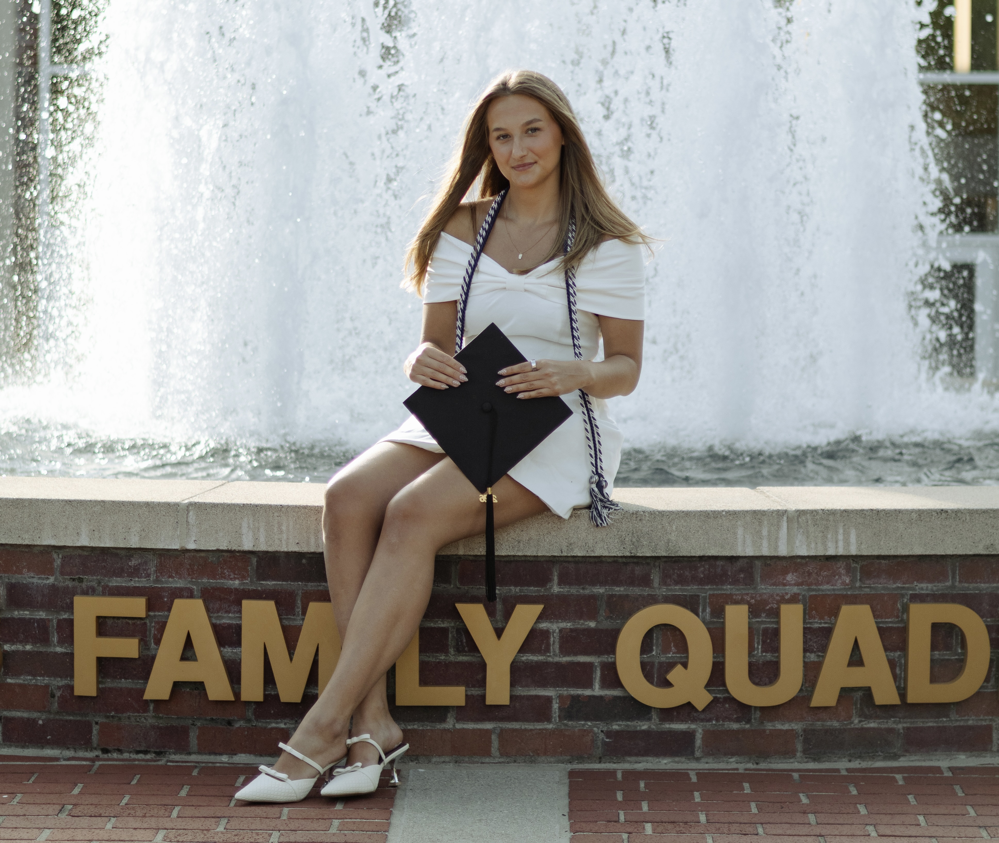

Hi! My name is Filippa, I am a Marketing Manager and MA student in Content Strategy based in Graz, Austria. Passionate about storytelling, digital communication, and creative marketing, I combine strategic thinking with skills in journalism, photography, and video production to create engaging content, build brands, and connect with audiences.

RESET Adaptive Mountain Bike Solutions
Sep 2026 - Current
The Patriot, University of the Cumberlands
Aug 2025-May 2026
Ung Media Sverige
May 2025- Jul 2025
FH Joanneum, Austria
Sep 2026 - Current
Univeristy of the Cumberlands,USA
Aug 2022 - May 2026
Make sure to check out my portfolio where I share my experience and projects!
Visit my Portfolio
Send me a email filippa.malmstrom2003@gmail.com
You can also reach me on phone +46769420196